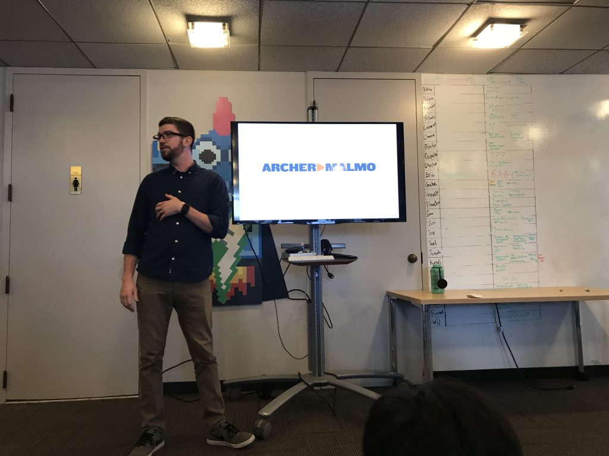

The Place I Hope To Work At: ArcherMalmo
Last Friday, on the 8th of December in 2017, our Web Design Classes at Bartlett High School went to ArcherMalmo and took a tour around their work building. I thought the building felt very homey and calming. The offices were set up however the worker wanted, and to me that was an amazing thing to see. Everyone looked happy with what they were doing. These all made me interested in the trip right away, and hooked me in to the tour.
Here's an image of what some of the office looked like, and also the company logo:

After I was finished looking over the office, I was immediately hooked into our tour guide's description of the workplace, as well as how he described the operations that happened there. Everything thrown out by him interested me, from the experiences of getting there, to the way their people are spread out. The way the company is operated it with more people towards the displayed side of the company, and less in the back door-like areas of the company experience. I felt like this was where I wanted to work, and this was why I had been learning all this code throughout high school.
Then, we moved from the explanation onto splitting up into groups, not before we took a group picture though:

We moved on from there into the basement area of the building, which contained deep dark se- I mean, recording equipment. We were introduced to the wonders of video editing and shown what all of the equipment they had did. It was a super cool experience, and it was really interesting to see the cameras that record commercials in action. After that, we moved onto more of the upstairs things, like the social media department and the executive floor. I really loved both of those, as they also gave the same cozy feel the other floors did.
Sadly, after that the tour was done, and we left to go eat lunch at CookOut. I had a lot of fun on the field trip and most likely found the place I hope I can find a job at in the future.